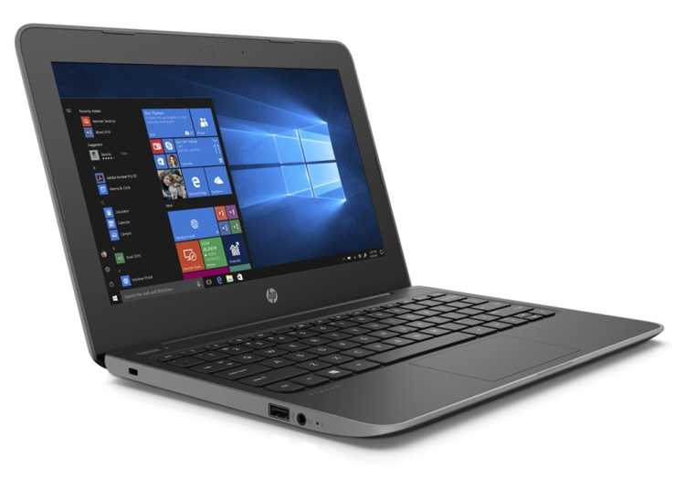

Виды ноутбуков
Прежде всего нужно определиться - для чего нужен ноутбук? Работа, учеба, игры или просто серфинг в интернете - разные задачи, для которых могут быть разные решения. К примеру, на мощном игровом ноутбуке не будет хватать зарядки для длительных фильмов, а в сбалансированном ультрабуке не поиграешь в игры. Давайте разбираться!
Ноутбуки начального уровня
 Это самые дешевые ноутбуки при изготовлении которых производитель экономит на всем для снижения стоимости устройства. В большинстве случаев экономят на процессоре, поэтому дешевые ноутбуки имеют очень низкую производительность. Также оставляют желать лучшего качество сборки, пластик и комплектующие. Подобные модели встречаются даже у некоторых серьезных производителей, так как все-таки могут справляться с повседневными задачами. К основной категории покупателей ноутбуков начального уровня относятся люди, ограниченные в бюджете, но которым необходимо выполнение на компьютере простых повседневных задач.
Офисные (бюджетные) ноутбуки
Сегмент бюджетных ноутбуков является самым массовым. Сегодня это достаточно мощные и практически бесшумные устройства, производительности которых хватает для запуска большинства программ, а также многих игр с небольшими или средними требования. Такие ноутбуки идеально подходят для учебы и работы. Главная особенность бюджетных моделей – интегрированная в процессор или чипсет видеокарта, поэтому они не в силах справляться с мощными играми и программам. Покупателями бюджетных ноутбуков являются студенты, работники офиса и другие группы населения, которым не требуется запуск требовательных игр.
Универсальные ноутбуки
По сравнению с бюджетными моделями у них более высокая производительность, которая позволяет им справляться с требовательным специализированным программным обеспечением, а также запускать большинство современных игр. Главным их недостатком является ощутимый шум и нагрев во время работы. Обычно универсальные ноутбуки выбирают те, кому требуется запуск мощных игр и программ, но при этом нет возможности переплачивать за самые мощные ноутбуки.
Игровые ноутбуки
Эти ноутбуки являются самыми мощными и могут похвастаться лучшей производительностью не только процессора, но и видеокарты, что дает возможность играть в самые требовательные современны игры. Однако покупателю игрового ноутбука нужно быть готовым к тому, что такие модели достаточно сильно шумят и нагреваются, поэтому также возникает необходимость в приобретении дополнительной системы охлаждения. Поскольку игровые ноутбуки являются самыми дорогими, то их выбирают геймеры, которые не хотят ничем ограничивать мощность своего ноутбука, а вопрос доступного бюджета для них не актуален.
Ультрабуки
Более тонкие, легкие и стильные ноутбуки по сравнению с обычными. Но за такие качества приходится платить более высокой ценой, хрупкостью, более слабой производительностью, а также отсутствием DVD-привода. Ультрабуки не стоит приобретать тем, кто любит провести время за игрой, иначе придется продать ноутбук бу в спб, поскольку из-за своей компактности ультрабуки перегреваются при высокой нагрузке. Основной категорией покупателей ультрабуков являются девушки и деловые люди, которым важен статус и имидж.
Нетбуки
Этот тип небольших компактных ноутбуков сегодня активно теряет свою популярность из-за появления недорогих компактных ультрабуков, а также планшетов. Главной особенность нетбуков является небольшой размер дисплея (9-12,5 дюймов). Они имеют процессор невысокой мощности, длительный срок работы от аккумулятора, а также широкий набор мультимедийных функций. Небольшой вес и габариты позволяют владельцу брать их с собой без каких-либо неудобств. Нетбуки в большинстве случаев отличаются скромным быстродействием, поскольку в них используются одни из самых слабых процессоров. Если же нетбук сделать мощным, то он будет слишком сильно перегреваться. Главными покупателями нетбуков являются студенты и деловые люди, которым необходима мобильность.
Сенсорные ноутбуки-трансформеры
Такие модели активно продвигается в последнее время большинством производителей, но пока сенсорный экран в ноутбуке остается лишь дорогостоящей дополнительной составляющей, которая редко оказывается полезной. Эти модели не пользуются особым спросом из-за приличной толщины, большого веса, более низкой надежности, а также необходимости использования ОС Windows 8, которая является ориентированной на сенсорное управление.

Наверх
Telegram